КАТАРАКТА 2026
26-й Всероссийский научно-практический конгресс с международным участием
Современные технологии катарактальной, рефракционной и роговичной хирургии
Современные технологии катарактальной, рефракционной и роговичной хирургии
2–4 сентября 2026
Москва, Конгресс-центр ЦМТ
Москва, Конгресс-центр ЦМТ

Современный подход к хирургической коррекции смешанного астигматизма с применением фемтосекундной лентикулярной технологии
Докладчик: Никитина Анастасия Евгеньевна
Соавторы: д.м.н. Костенев С.В., к.м.н. Макаров Р.А., Садрутдинов Р.Ш.
Соавторы: д.м.н. Костенев С.В., к.м.н. Макаров Р.А., Садрутдинов Р.Ш.
ФГБОУ ВО «Российский университет медицины» Минздрава России,
ФГАУ «НМИЦ «МНТК «Микрохирургия глаза» им. акад. С.Н. Федорова» Минздрава России
ФГАУ «НМИЦ «МНТК «Микрохирургия глаза» им. акад. С.Н. Федорова» Минздрава России
Актуальность
КАТАРАКТА 2026 · 2–4 сентября 2026, Москва
2 / 20
• Астигматизм — мультифакторное состояние с выраженным наследственным компонентом.
• Полногеномные исследования (Shing E. et al., 2024) выявили свыше 50 полиморфизмов в 10 генах, включая локус PDGFRA, регулирующий кривизну роговицы.
• Полногеномные исследования (Shing E. et al., 2024) выявили свыше 50 полиморфизмов в 10 генах, включая локус PDGFRA, регулирующий кривизну роговицы.
Хирургическая коррекция смешанного астигматизма
Эксимерлазерная технология
ФемтоЛАЗИК
Современный «золотой» стандарт в коррекции смешанного астигматизма
Лентикулярная технология
?
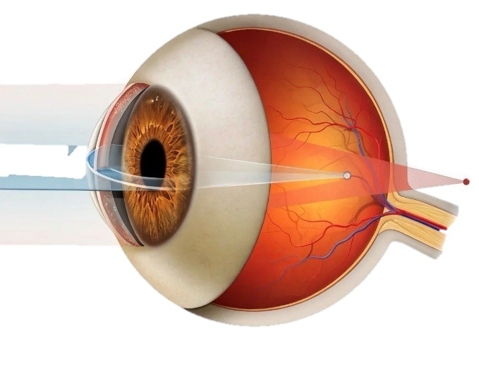
Азара Д.Т., Алио Х.Л., Кортины М.С., Халлака Д.А. Хирургическое лечение астигматизма. Москва: ГЭОТАР-Медиа, 2025. – 272 с. doi: 10.33029/9704-8200-1-STA-2025-1-272;
Shing E., Kam K.W., Zaabaar E., Zhang X.J., Young A.L., Pang C.P., Tham C.C., Yam J.C. Heritability and Genetic Factors of Astigmatism and Corneal Curvature: A Systematic Review and Meta-analysis. American Journal of Ophthalmology. 2025;269:161–171. doi: 10.1016/j.ajo.2024.08.019.
Клокова О.А., Дамашаускас Р.О., Качаров А.И., Пискунов А.В. Гейденрих М.С., Дьяконова Е.И. Ранние клинико-функциональные результаты коррекции смешанного астигматизма в зависимости от его степени с помощью высокочастотного эксимерного лазера Schwind Amaris 1050RS. Офтальмология. 2025;22(2):295–304.
Shing E., Kam K.W., Zaabaar E., Zhang X.J., Young A.L., Pang C.P., Tham C.C., Yam J.C. Heritability and Genetic Factors of Astigmatism and Corneal Curvature: A Systematic Review and Meta-analysis. American Journal of Ophthalmology. 2025;269:161–171. doi: 10.1016/j.ajo.2024.08.019.
Клокова О.А., Дамашаускас Р.О., Качаров А.И., Пискунов А.В. Гейденрих М.С., Дьяконова Е.И. Ранние клинико-функциональные результаты коррекции смешанного астигматизма в зависимости от его степени с помощью высокочастотного эксимерного лазера Schwind Amaris 1050RS. Офтальмология. 2025;22(2):295–304.
Актуальность
КАТАРАКТА 2026 · 2–4 сентября 2026, Москва
3 / 20
VisuMax
Пилотное исследование на платформе VisuMax (Carl Zeiss Meditec AG) показало возможность коррекции смешанного астигматизма методом лентикулярной хирургии (Ganesh S. et al., 2024), однако методика пока не применяется в стандартной практике.
Elita
Экспериментальное исследование ex-vivo (11 свиных глаз) на платформе Elita, Johnson and Johnson Surgical Vision, Inc. (США) свидетельствуют о технической возможности коррекции смешанного астигматизма и гиперметропии.
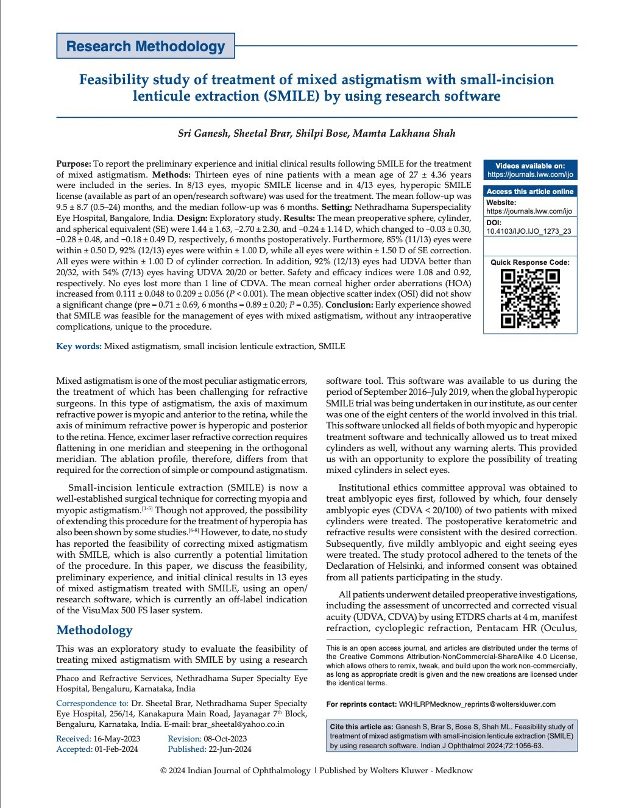
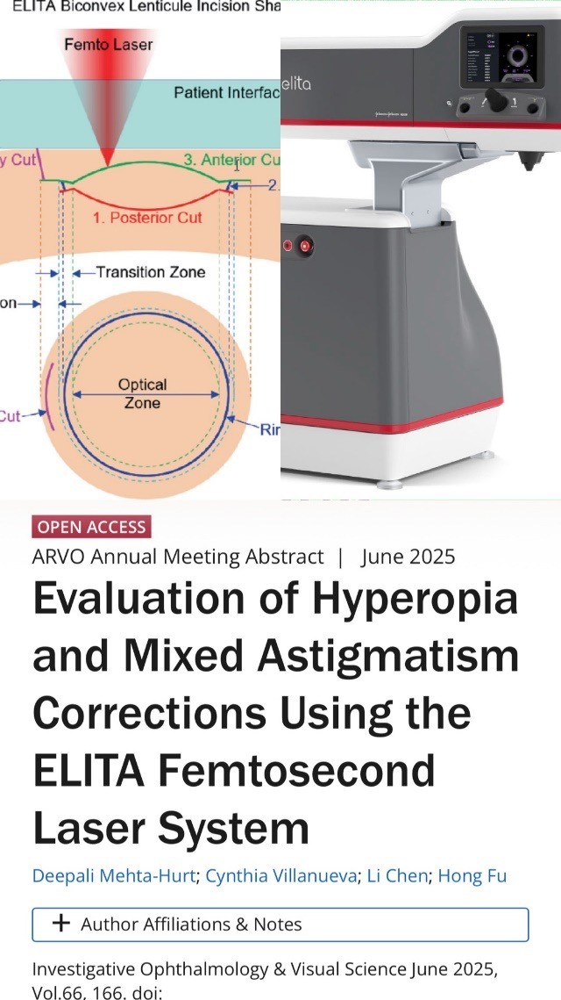
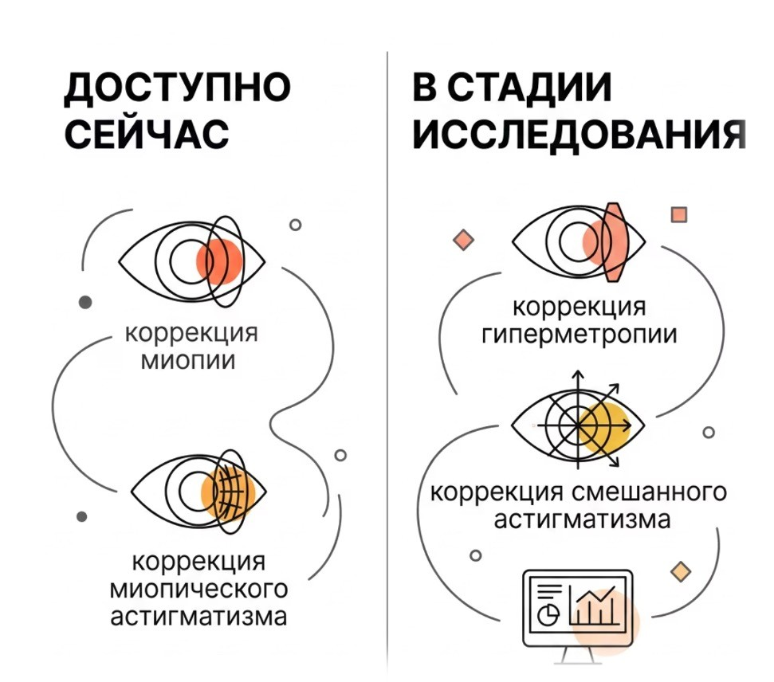
КАТАРАКТА 2026 · 2–4 сентября 2026, Москва
Цель
Разработать лентикулярную технологию для коррекции смешанного астигматизма
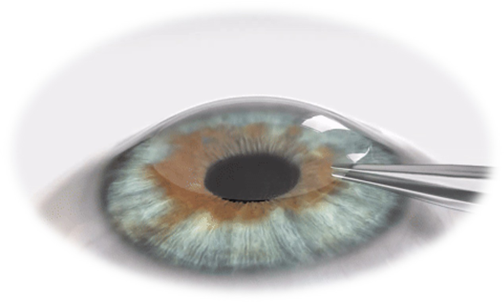
Материалы и методы
КАТАРАКТА 2026 · 2–4 сентября 2026, Москва
5 / 20
ГРУППА 1
Лентикулярная технология
(SMILE)
(SMILE)
Фемтосекундная лазерная установка VisuMax
(Carl Zeiss Meditec AG, Германия)
(Carl Zeiss Meditec AG, Германия)
20 пациентов (40 глаз)
ГРУППА 2
Эксимерлазерная технология
(ФемтоЛАЗИК)
(ФемтоЛАЗИК)
Интегрированная платформе WaveLight Refractive Suite
(WaveLight FS200 + WaveLight EX500, Alcon Laboratories Inc., США)
(WaveLight FS200 + WaveLight EX500, Alcon Laboratories Inc., США)
20 пациентов (40 глаз)
Наблюдение проводилось до операции и в стандартные сроки – 1 сутки, 3 и 6 месяцев
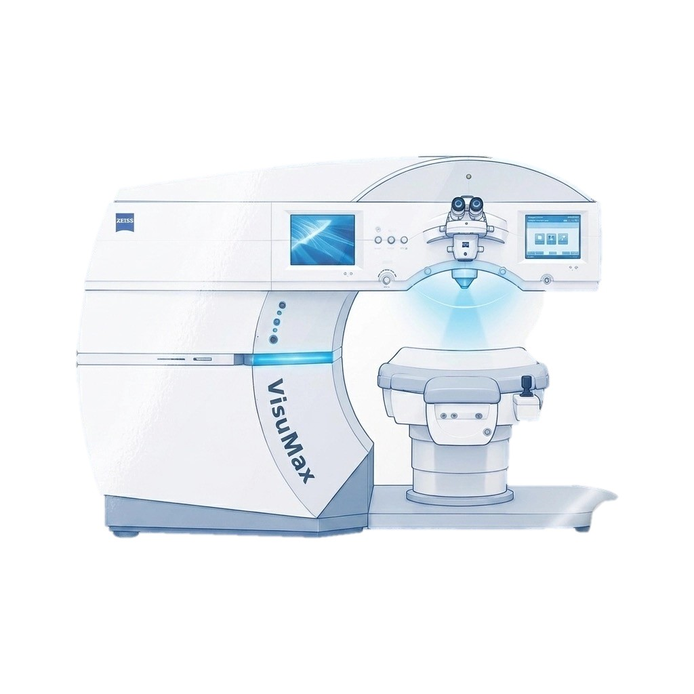
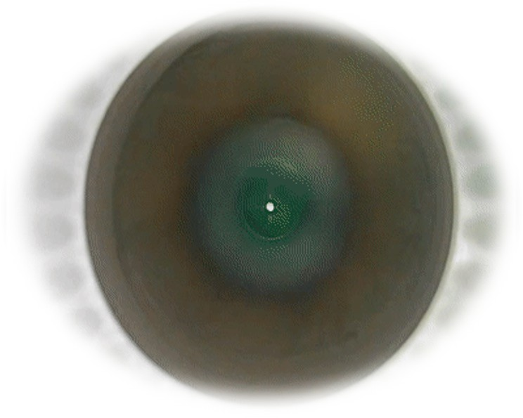
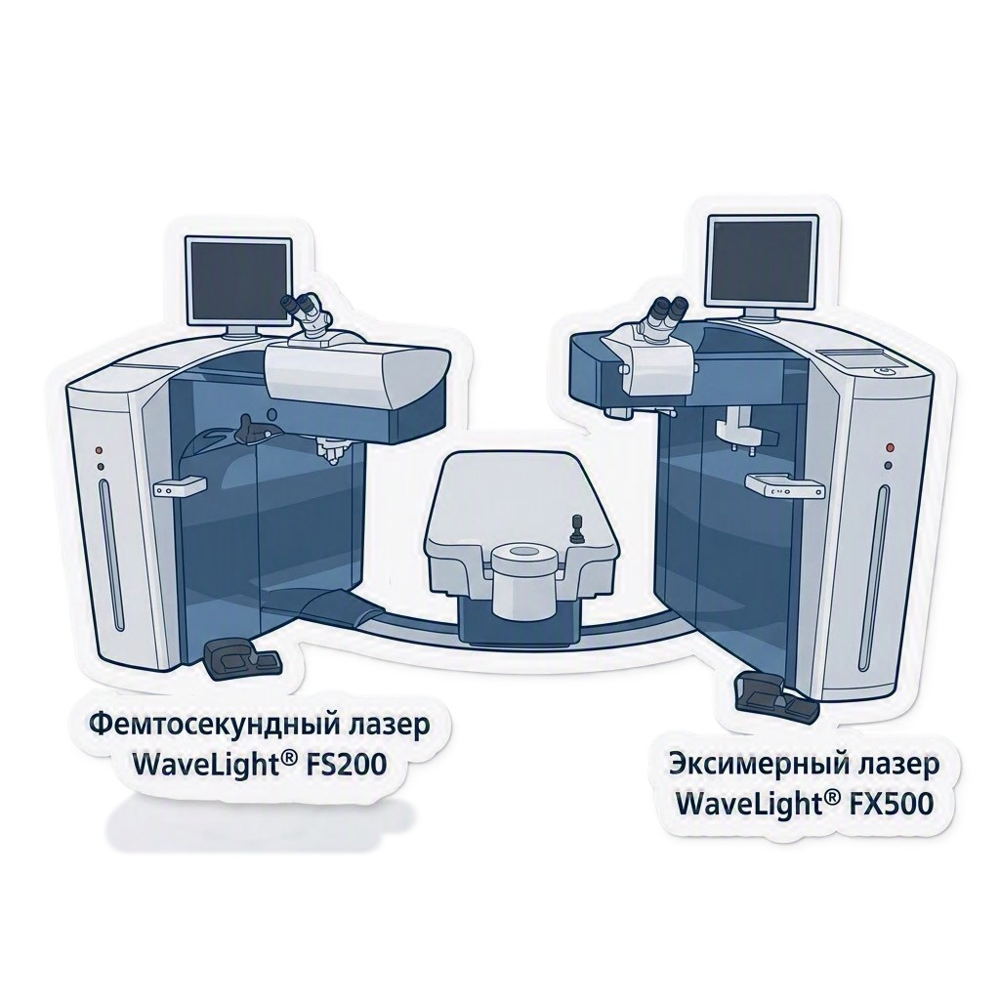
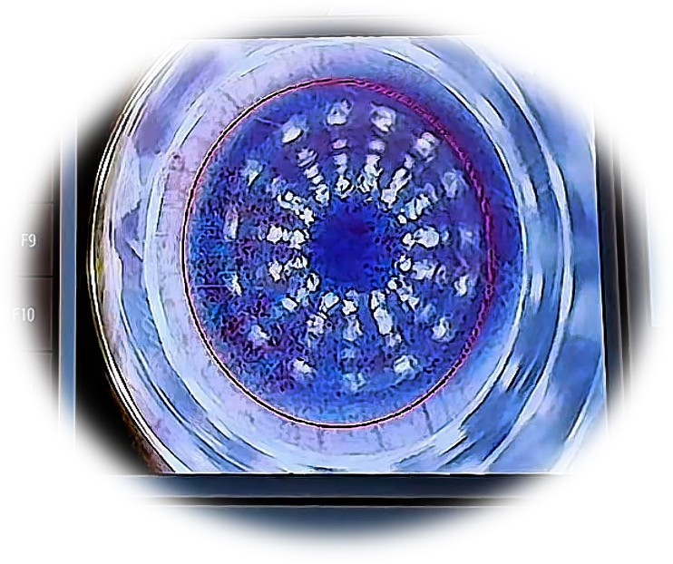
Диапазон рефракционных значений в исследуемых группах
КАТАРАКТА 2026 · 2–4 сентября 2026, Москва
6 / 20
Лентикулярная технология (SMILE)
Сферический компонент (Sph):
от +0,25 до +1,75 D
(M ± SD +0,54 ± 0,39)
(M ± SD +0,54 ± 0,39)
Цилиндрический компонент (Cyl):
от −2,00 до −5,00 D
(M ± SD −3,07 ± 0,93)
(M ± SD −3,07 ± 0,93)
Кератометрия, D:
K1 41,58 D, K2 44,44 D,
K AVE 43,00 D
K AVE 43,00 D
Пахиметрия, мкм:
от 494 до 615 мкм
(M ± SD 554,1 ± 36,2)
(M ± SD 554,1 ± 36,2)
Эксимерлазерная технология (ФемтоЛАЗИК)
Сферический компонент (Sph):
от +0,25 до +3,00 D
(M ± SD +1,25 ± 0,81)
(M ± SD +1,25 ± 0,81)
Цилиндрический компонент (Cyl):
от −1,25 до −6,00 D
(M ± SD −3,24 ± 2,03)
(M ± SD −3,24 ± 2,03)
Кератометрия, D:
K1 41,69 D, K2 44,76 D,
K AVE 43,22 D
K AVE 43,22 D
Пахиметрия, мкм:
от 483 до 596 мкм
(M ± SD 537,1 ± 30,8)
(M ± SD 537,1 ± 30,8)
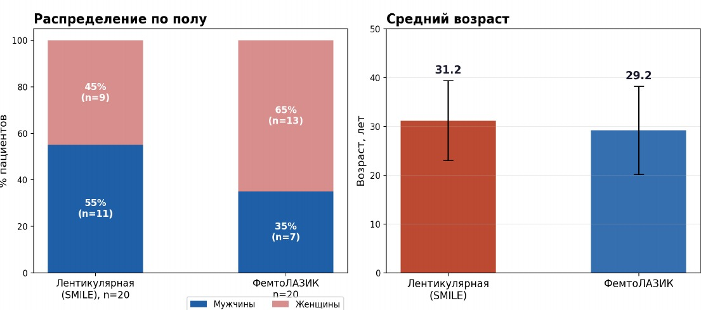
* M ± SD Значения представлены как среднее ± стандартное отклонение
Методы диагностики
КАТАРАКТА 2026 · 2–4 сентября 2026, Москва
7 / 20
Стандартные методы диагностики
Визометрия
НКОЗ и МКОЗ в естественных условиях и при медикаментозном мидриазе
Рефрактометрия, кератометрия
в естественных условиях и при медикаментозном мидриазе
Тонометрия, биометрия, периметрия
Биомикроскопия и офтальмоскопия
НКОЗ и МКОЗ в естественных условиях и при медикаментозном мидриазе
Рефрактометрия, кератометрия
в естественных условиях и при медикаментозном мидриазе
Тонометрия, биометрия, периметрия
Биомикроскопия и офтальмоскопия
Специальные методы диагностики
Кератотопография
Pentacam AXL (Oculus, Германия)
Анализ биомеханических свойств роговицы
Corvis ST (Oculus, Германия)
Аберрометрия
KR-1W (Topcon, Япония)
Pentacam AXL (Oculus, Германия)
Анализ биомеханических свойств роговицы
Corvis ST (Oculus, Германия)
Аберрометрия
KR-1W (Topcon, Япония)
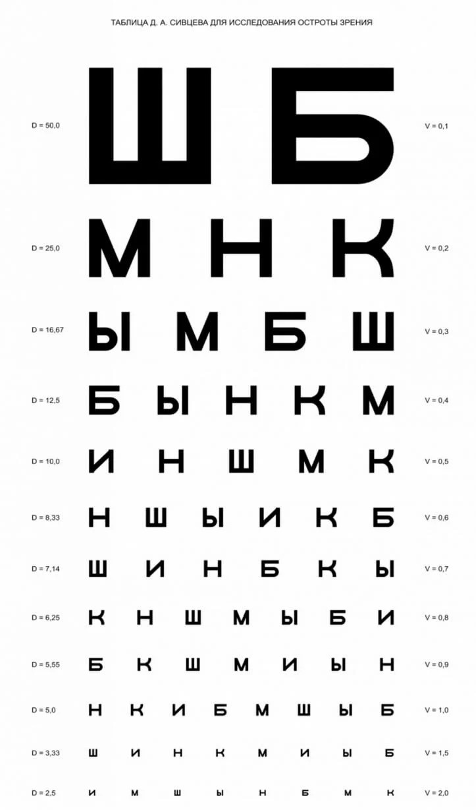
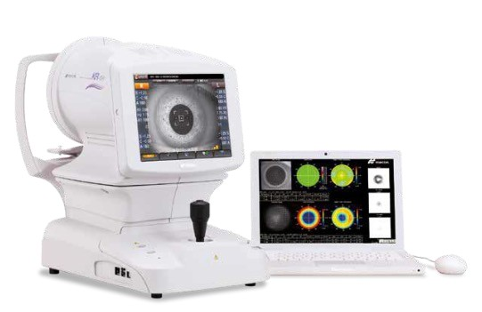
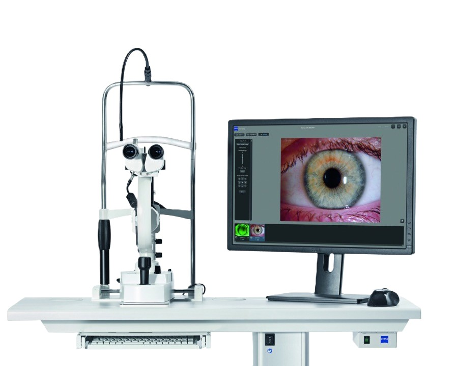
Лентикулярная технология коррекции смешанного астигматизма
КАТАРАКТА 2026 · 2–4 сентября 2026, Москва
8 / 20
Транспозиция исходной рефракции (sph, cyl, ax) по разработанной технологии:
Шаг 1
Условия допуска:
Sph ≤ +1,75D
Cyl ≥ -5D
SE ≤ -0.75D
Cyl ≥ -5D
SE ≤ -0.75D
Шаг 2
Транспозиция сферы
SPH' = SPH + CYL
Шаг 3
Инверсия цилиндра
CYL' = -CYL (знак +)
Шаг 4
Коррекция оси
Ax ≤ 90° → +90°;
AX > 90° → −90°.
AX > 90° → −90°.
Ручная маркировка роговицы для минимизации циклоторсии (ось астигматизма)
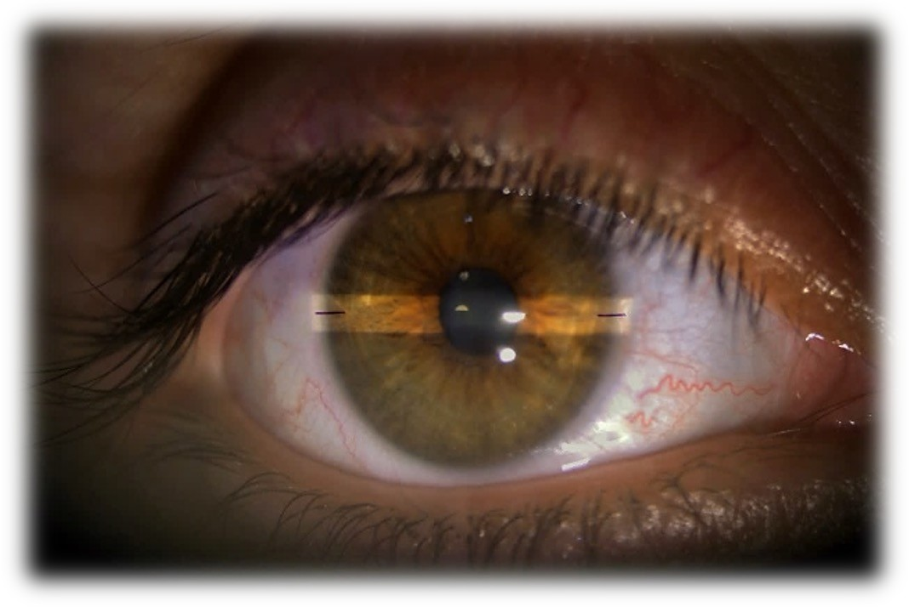
Маркерная разметка роговицы для контроля циклоторсии
Шаг 5
Ввод полученных рефракционных данных в фемтосекундную лазерную установку
(Согласно инструкции к VisuMax®*, возможна коррекция близорукости от –0,50 дптр до –10,00 дптр и астигматизма до –5,00 дптр)
Розенблюм Ю.З. Оптометрия (подбор средств коррекции зрения). СПб.: Гиппократ; 1996.
Гамидов Г.А., Мушкова И.А., Костенев С.В., Гамидов А.А. Способ контроля циклоторсии глазного яблока при коррекции миопического астигматизма по технологии SMILE. Офтальмология. 2020; 17(3): 351-360.
Гамидов Г.А., Мушкова И.А., Костенев С.В., Гамидов А.А. Способ контроля циклоторсии глазного яблока при коррекции миопического астигматизма по технологии SMILE. Офтальмология. 2020; 17(3): 351-360.
Ход операции
КАТАРАКТА 2026 · 2–4 сентября 2026, Москва
9 / 20
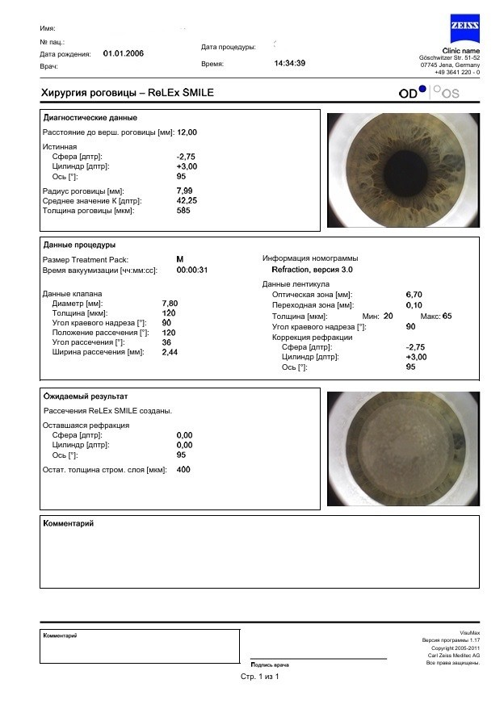
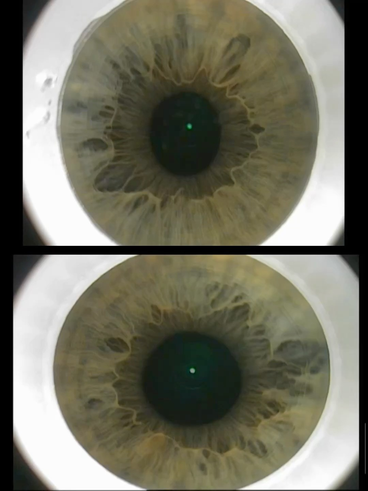
* Оперирующий хирург – д.м.н Костенев С.В.
КАТАРАКТА 2026 · 2–4 сентября 2026, Москва
10 / 20
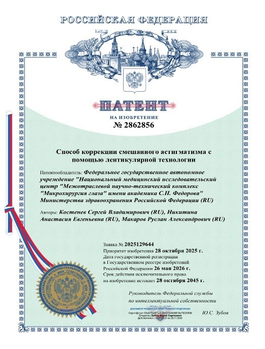
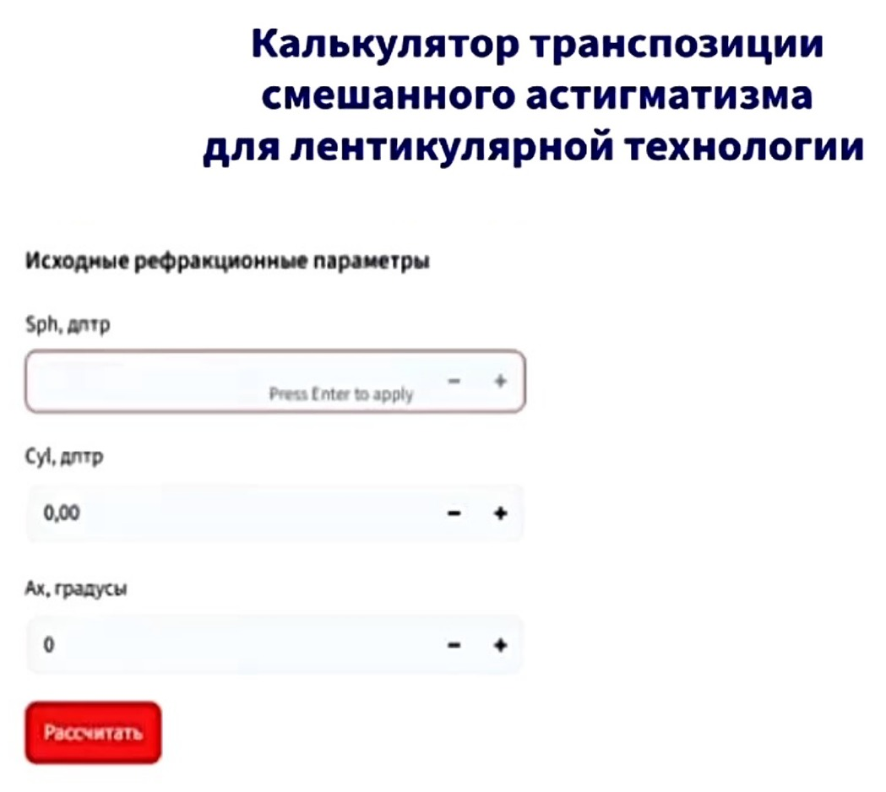
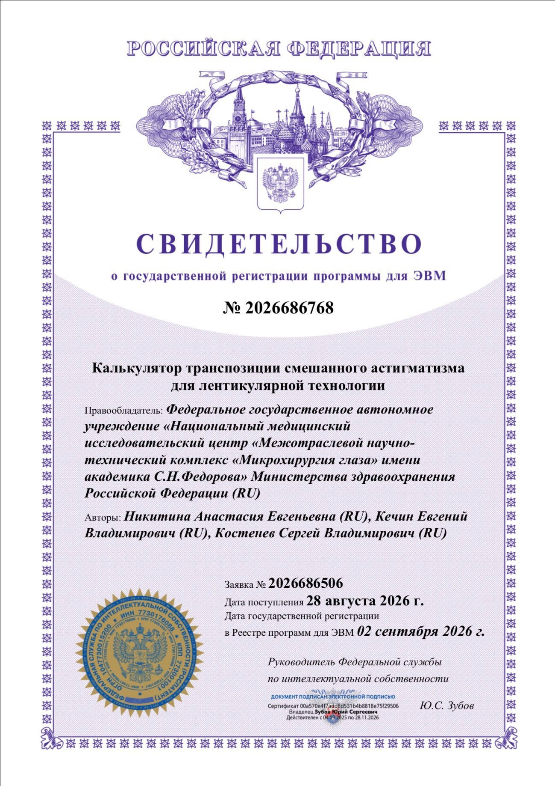
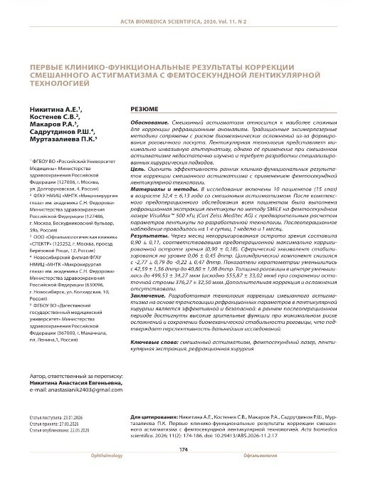
Критерии включения и исключения
КАТАРАКТА 2026 · 2–4 сентября 2026, Москва
11 / 20
Критерии включения
— Возраст 18 лет и старше
— Диагноз «смешанный астигматизм»
— Максимально корригированная острота зрения (МКОЗ) 0,3 и выше
— Толщина роговицы от 470 мкм и более
— Отсутствие признаков кератоконуса по BAD
— Диагноз «смешанный астигматизм»
— Максимально корригированная острота зрения (МКОЗ) 0,3 и выше
— Толщина роговицы от 470 мкм и более
— Отсутствие признаков кератоконуса по BAD
ДЛЯ ЛЕНТИКУЛЯРНОЙ ТЕХНОЛОГИИ-
- Sph ≤ +1,75D
- Cyl ≥ -5D
- SE ≤ -0.75D
- Sph ≤ +1,75D
- Cyl ≥ -5D
- SE ≤ -0.75D
Критерии исключения
— Возраст младше 18 лет
— Патология роговицы: кератоконус, дистрофии, неоваскуляризация, помутнение, рубцевание, состояние после кератопластики
— МКОЗ менее 0,3; толщина роговицы менее 470 мкм
— Ранее выполненный ЛАЗИК; глаукома (кроме ранней стадии); катаракта (кроме врождённой)
— Воспалительные и системные заболевания в стадии обострения, беременность и лактация
— Патология роговицы: кератоконус, дистрофии, неоваскуляризация, помутнение, рубцевание, состояние после кератопластики
— МКОЗ менее 0,3; толщина роговицы менее 470 мкм
— Ранее выполненный ЛАЗИК; глаукома (кроме ранней стадии); катаракта (кроме врождённой)
— Воспалительные и системные заболевания в стадии обострения, беременность и лактация
ДЛЯ ЛЕНТИКУЛЯРНОЙ ТЕХНОЛОГИИ-
-Несоответствие критериям SE и рефракционным параметрам
-Несоответствие критериям SE и рефракционным параметрам
Параметры операции: лентикулярная технология (SMILE)
КАТАРАКТА 2026 · 2–4 сентября 2026, Москва
12 / 20
Фемтосекундная лазерная установка VisuMax (Carl Zeiss Meditec AG, Германия)
Режим
«быстрый»
Оптическая зона
6,7 мм
Переходная зона
0,10 мм
Диаметр клапана (cap)
7,8–7,9 мм
Толщина клапана (cap)
120 мкм
Угол краевого надреза
90°
Длина входного разреза
2,0–2,4 мм
Интерфейс
«S» / «M», в зависимости от диаметра роговицы
Количество разрезов
1
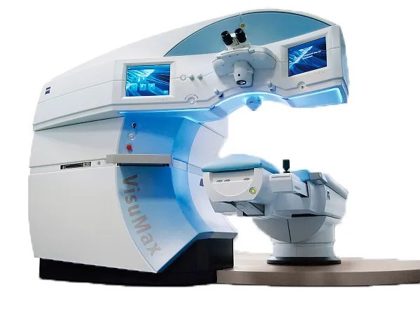
Параметры операции: ФемтоЛАЗИК
КАТАРАКТА 2026 · 2–4 сентября 2026, Москва
13 / 20
Интегрированная платформе WaveLight Refractive Suite (WaveLight FS200 + WaveLight EX500, Alcon Laboratories Inc., США)
Оптическая зона абляции
6,5 мм
Переходная зона
1,2 мм
Толщина флэпа
110 мкм
Общая зона абляции
8,9 мм
Номограмма
S 001
Положение и ширина «ножки»
90°, 0,6 мм
Остальные параметры
варьировали индивидуально (рефракция, пахиметрия и т.д)
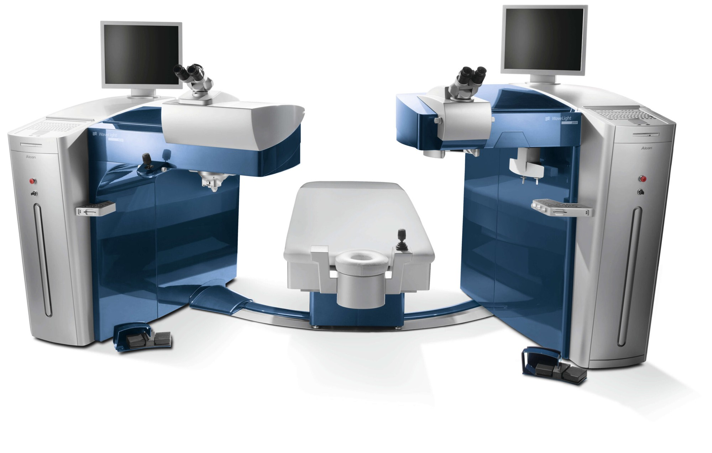
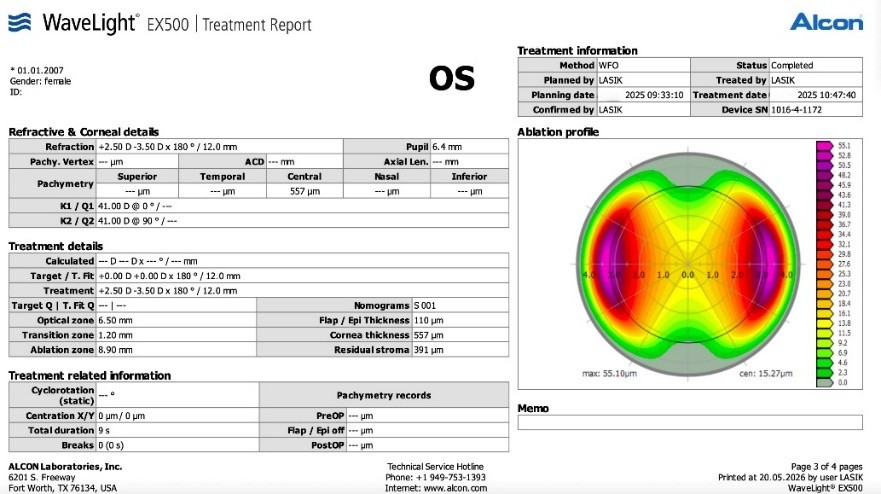
Математическое моделирование создаваемой лентикулы
КАТАРАКТА 2026 · 2–4 сентября 2026, Москва
14 / 20
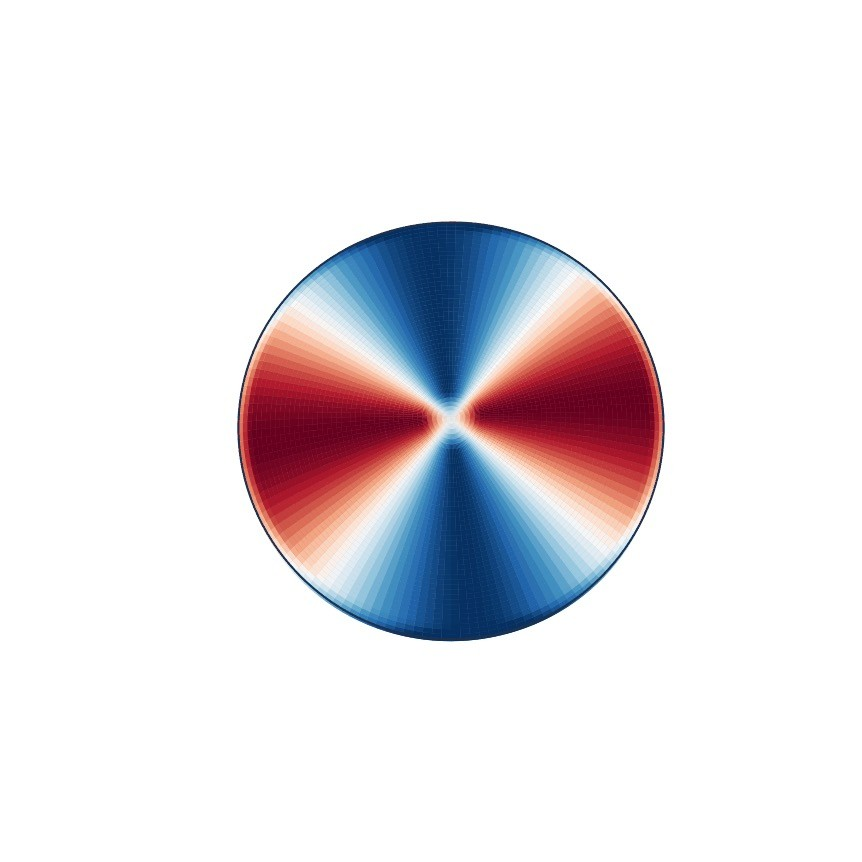
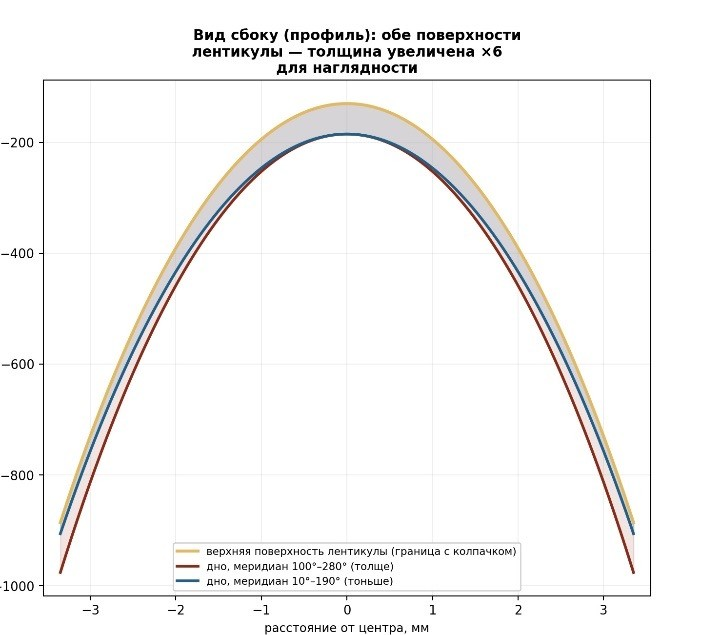
На основании математической модели построена геометрическая (схематическая) модель лентикулы при смешанном астигматизме
Эмпирическая формула
расчёта максимальной толщины лентикулы
расчёта максимальной толщины лентикулы
T(r,θ) = C + A·(r/R)²·cos(2(θ − ось))
C = (Max_theory + T_min) / 2 · A = (Max_theory − T_min) / 2 · R = S / 2
Max_theory = (S²/6)·(2|Sph′| + |Cyl′|) · T_min ≈ 20 мкм (константа устройства)
Max_theory = (S²/6)·(2|Sph′| + |Cyl′|) · T_min ≈ 20 мкм (константа устройства)
Результаты: динамика НКОЗ и МКОЗ в исследуемых группах
КАТАРАКТА 2026 · 2–4 сентября 2026, Москва
15 / 20
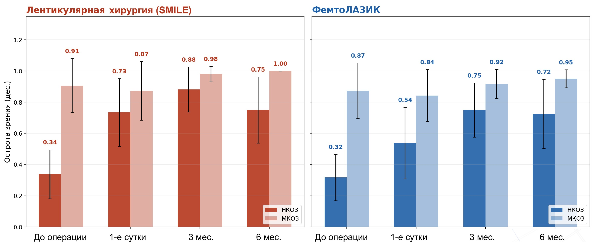
Результаты: динамика рефракционного компонента
КАТАРАКТА 2026 · 2–4 сентября 2026, Москва
16 / 20
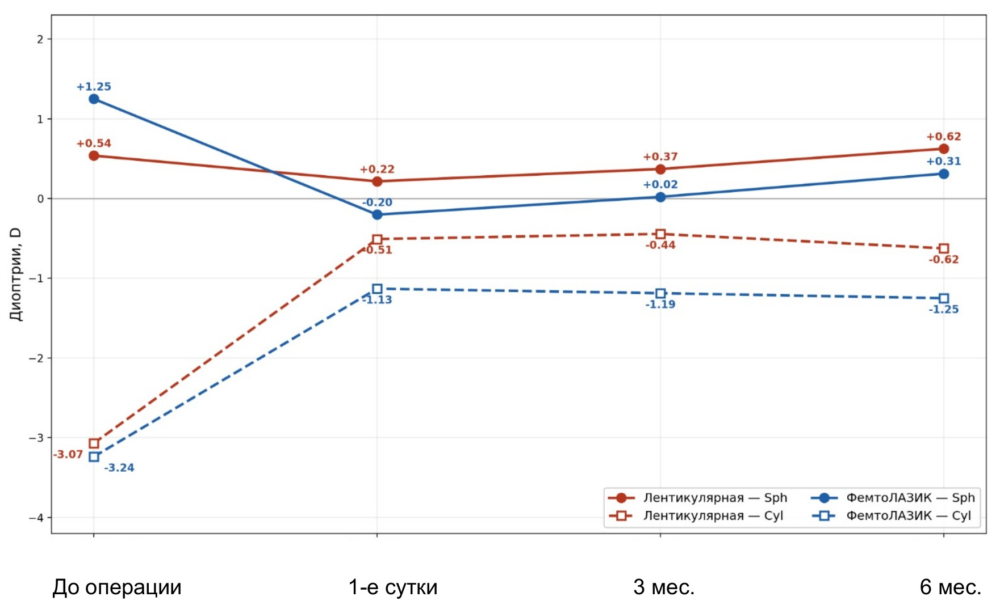
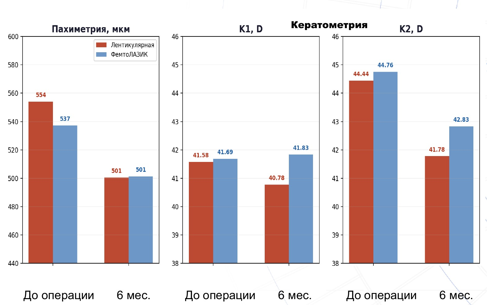
Результаты: эффективность и безопасность
КАТАРАКТА 2026 · 2–4 сентября 2026, Москва
17 / 20
(НКОЗ после операции / МКОЗ до операции)
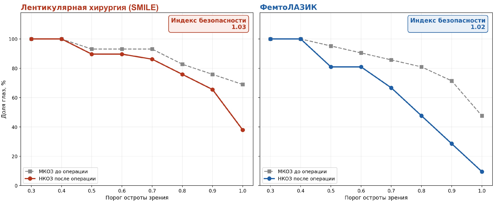
Результаты: прогнозируемость
КАТАРАКТА 2026 · 2–4 сентября 2026, Москва
18 / 20
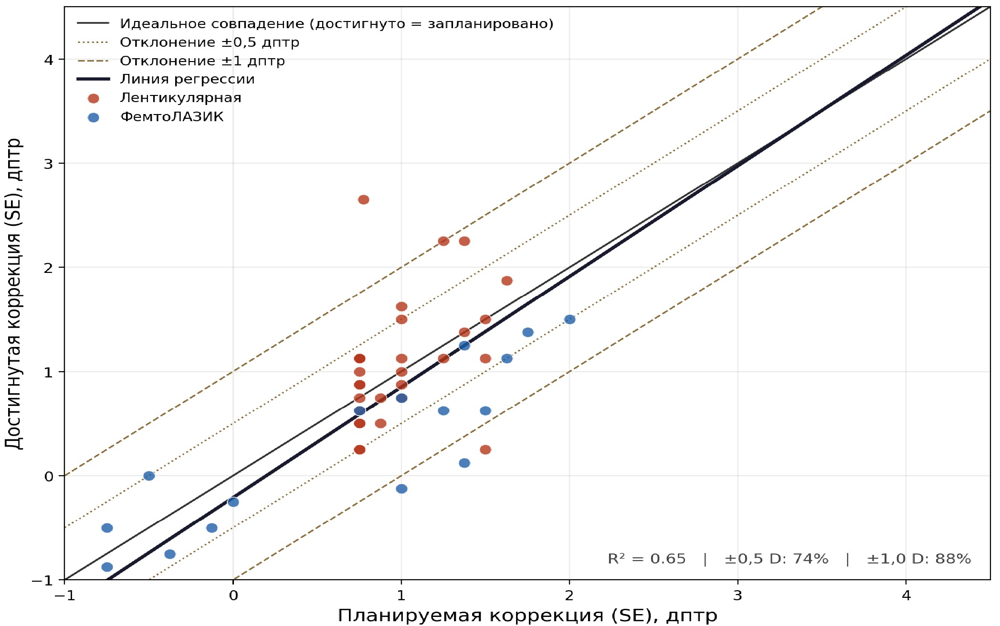
Выводы
КАТАРАКТА 2026 · 2–4 сентября 2026, Москва
19 / 20
1
На основании математического моделирования построена геометрическая модель лентикулы, отражающая её торическую (седловидную) форму, что подтверждает научную обоснованность разработанного и внедренного в клиническую практику протокола транспозиции;
2
НКОЗ повысилась в обеих группах (в лентикулярной технологии — с 0,34 до 0,88, в группе ФемтоЛАЗИК — с 0,32 до 0,75): лентикулярная технология обеспечивает более быстрое и полное зрительное восстановление без коррекции;
МКОЗ оставалась стабильно высокой в обеих группах (с 0,91 до 1,0 и с 0,87 до 0,95 соответственно): ни одна из технологий не снижает потенциальную остроту зрения пациента;
МКОЗ оставалась стабильно высокой в обеих группах (с 0,91 до 1,0 и с 0,87 до 0,95 соответственно): ни одна из технологий не снижает потенциальную остроту зрения пациента;
3
Сферический компонент рефракции приблизился к эмметропии в обеих группах (с +0,54 до +0,37 D в лентикулярной группе и с +1,25 до +0,31 D в группе ФемтоЛАЗИК);
Цилиндрический компонент существенно снизился в обеих группах (с −3,07 до −0,62 D и с −3,24 до −1,25 D соответственно), а остаточный цилиндр в лентикулярной группе был втрое меньше, чем в группе ФемтоЛАЗИК;
Цилиндрический компонент существенно снизился в обеих группах (с −3,07 до −0,62 D и с −3,24 до −1,25 D соответственно), а остаточный цилиндр в лентикулярной группе был втрое меньше, чем в группе ФемтоЛАЗИК;
4
Разработанная лентикулярная технология эффективна, безопасна и перспективна для внедрения при смешанном астигматизме.
Необходимы дальнейшее накопление клинических данных и их статистическая обработка.
Необходимы дальнейшее накопление клинических данных и их статистическая обработка.
КАТАРАКТА 2026 · 2–4 сентября 2026, Москва
Благодарю за внимание!
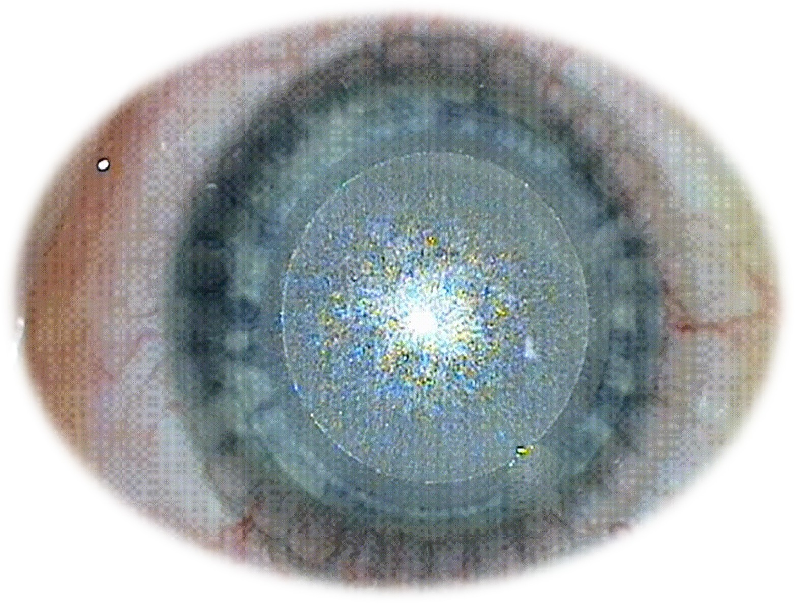
Электронная почта: anastasianik2403@gmail.com